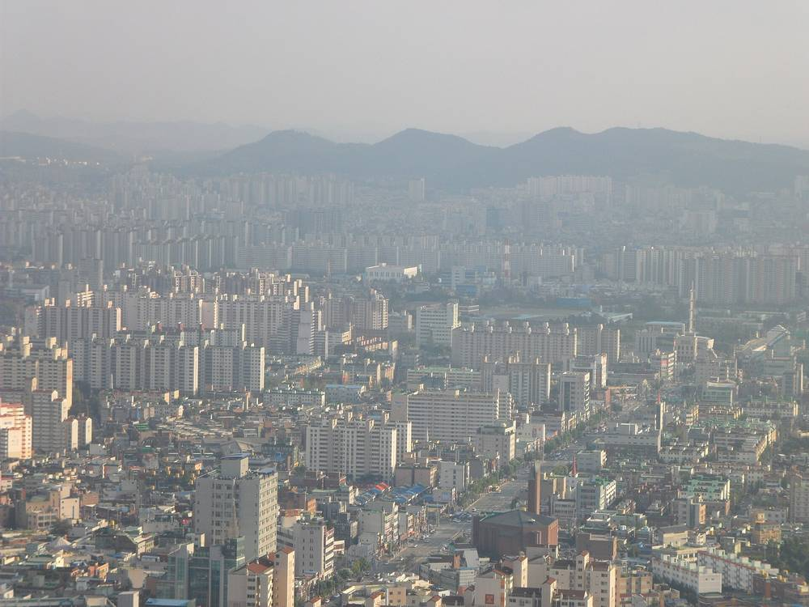

인천연구원, 시민 에너지전환 참여 넓히려면 실천보상·생활권 공동실천·시민소유 확대해야

2026년 기획연구 '인천 탄소중립 선도도시 에너지 분야 시민참여 방안' 결과…국내외 사례 4개 유형 분석, 시민인식 조사서 경제적 인센티브·참여 편의성·정보 접근성이 과제로
인천연구원이 인천의 탄소중립을 앞당기려면 시민이 에너지전환에 참여할 때 받는 경제적 보상을 늘리고, 동네 단위의 공동실천과 시민소유를 넓혀야 한다는 연구 결과를 내놨다. 연구원은 2026년 기획연구과제 '인천 탄소중립 선도도시 에너지 분야 시민참여 방안'에서 국내외 에너지·기후 분야 시민참여 정책과 사례, 인천의 관련 정책 추진 현황을 살피고 시민인식 조사를 함께 벌였다. 국내외 사례는 정책 참여와 의견 반영을 다루는 거버넌스, 실천에 보상을 주는 인센티브, 주민이 함께 참여하는 공동체·협동조합, 교육·홍보의 4개 유형으로 나눴고, 시민인식 조사에서는 경제적 인센티브 강화와 실천 편의성 개선, 정보 접근성 확대가 주요 과제로 꼽혔다. 이를 바탕으로 연구진은 시민 제안과 정책 환류 강화, 시민 체감형 실천보상 확대, 생활권 공동실천과 시민소유 확대, 교육과 행동변화 연계를 4대 정책 방향으로 제시했는데, 이 가운데 생활권 공동실천과 시민소유 확대는 개인의 절약 활동을 지역 공동체의 참여사업으로 잇는 것으로, 인천의 지역별 생활환경과 참여 여건에 따라 공동체 활동이나 협동조합 방식을 검토할 수 있다는 내용이다. 한준 연구위원은 인천이 에너지전환의 상징성과 잠재력이 큰 도시이고 시민이 참여할 접점도 많아 활발한 시민참여로 에너지전환의 시너지를 낼 수 있다고 말했다. 이번 결과는 연구원의 정책 제안으로, 구체적인 사업 규모나 일정은 담기지 않았다.
시민에너지 관점
광역 연구기관이 시민참여 유형의 하나로 공동체·협동조합을 꼽고 정책 방향에 시민소유 확대를 넣은 것은, 시민을 절약 캠페인의 대상이 아니라 에너지 설비의 주인으로 보기 시작했다는 점에서 의미가 있다. 땅이 비싸고 이웃 관계가 느슨한 대도시에서는 공동 소유가 어렵다는 반론이 나올 수 있지만, 아파트 단지와 공공건물 지붕처럼 생활권 안에는 이미 함께 쓰는 공간이 적지 않다. 스코틀랜드 정부는 공동체·지역 소유 재생에너지 목표를 2030년까지 2GW로 정하고 해마다 실적을 집계해, 시민소유를 구호가 아니라 정책 숫자로 관리해 왔다. 인천도 보상과 교육에 머물지 말고 시민소유 발전 목표와 공공 지붕을 시민 조직에 여는 계획을 숫자로 정해 연구를 실행으로 옮겨야 한다.
출처: 경인매일 2026-11-02 김정호 원문 보기
仁川研究院、市民のエネルギー転換参加を広げるには実践への報酬・生活圏での共同実践・市民所有の拡大を
2026年企画研究「仁川カーボンニュートラル先導都市 エネルギー分野の市民参加方策」の結果…国内外の事例を4類型で分析、市民意識調査では経済的インセンティブ・参加のしやすさ・情報アクセスが課題に
仁川研究院は、仁川のカーボンニュートラルを早めるには、市民がエネルギー転換に参加した際に受け取る経済的な報酬を増やし、地域単位の共同実践と市民所有を広げるべきだとする研究結果をまとめた。研究院は2026年の企画研究課題「仁川カーボンニュートラル先導都市 エネルギー分野の市民参加方策」で、国内外のエネルギー・気候分野の市民参加政策と事例、仁川の関連政策の推進状況を分析し、市民意識調査もあわせて実施した。国内外の事例は、政策への参加と意見反映を扱うガバナンス、実践に報酬を与えるインセンティブ、住民がともに参加する共同体・協同組合、教育・広報の4類型に分類し、市民意識調査では経済的インセンティブの強化、実践のしやすさの改善、情報アクセスの拡大が主な課題に挙がった。これを踏まえ研究陣は、市民提案と政策へのフィードバックの強化、市民が実感できる実践報酬の拡大、生活圏での共同実践と市民所有の拡大、教育と行動変化の連携を4つの政策方向として示し、このうち生活圏での共同実践と市民所有の拡大は、個人の節約活動を地域共同体の参加事業につなげるもので、仁川の地域ごとの生活環境や参加条件に応じて共同体活動や協同組合方式を検討できるとした。韓俊（ハン・ジュン）研究委員は、仁川はエネルギー転換の象徴性と潜在力が大きい都市で、市民が参加できる接点も多く、活発な市民参加によってエネルギー転換の相乗効果を生み出せると述べた。今回の結果は研究院による政策提案で、具体的な事業規模や日程は盛り込まれていない。
市民エネルギーの視点
広域の研究機関が市民参加の類型の一つに共同体・協同組合を挙げ、政策方向に市民所有の拡大を入れたことは、市民を節約キャンペーンの対象ではなくエネルギー設備の持ち主として見始めたという点で意味がある。土地が高く近所付き合いも薄い大都市では共同所有は難しいとの反論も出うるが、マンション団地や公共建物の屋根のように、生活圏の中にはすでに共同で使う空間が少なくない。スコットランド政府は、共同体・地域所有の再生可能エネルギーの目標を2030年までに2GWと定めて毎年実績を集計し、市民所有をスローガンではなく政策の数字として管理してきた。仁川も報酬と教育にとどまらず、市民所有の発電目標と公共の屋根を市民組織に開く計画を数字で定め、研究を実行に移すべきだ。
出典: 京仁毎日 2026-11-02 キム・ジョンホ 原文を読む
仁川研究院：扩大市民参与能源转型，需增加实践奖励、生活圈共同实践和市民所有
2026年策划研究《仁川碳中和先导城市能源领域市民参与方案》结果…将国内外案例分为4类，市民认知调查显示经济激励、参与便利性和信息获取为主要课题
仁川研究院发布研究结果指出，要加快仁川实现碳中和，应增加市民参与能源转型时获得的经济奖励，并扩大社区层面的共同实践和市民所有。研究院在2026年策划研究课题《仁川碳中和先导城市能源领域市民参与方案》中，分析了国内外能源和气候领域的市民参与政策与案例以及仁川相关政策的推进现状，并同时开展了市民认知调查。国内外案例被分为4类：涉及政策参与和意见反映的治理型、对实践给予奖励的激励型、居民共同参与的社区·合作社型，以及教育·宣传型；市民认知调查则显示，加强经济激励、提高实践便利性和扩大信息获取是主要课题。在此基础上，研究团队提出了4个政策方向：加强市民提案与政策反馈、扩大市民可感受到的实践奖励、扩大生活圈共同实践和市民所有、把教育与行为改变相结合。其中，生活圈共同实践和市民所有的扩大是把个人的节能活动与地区社区的参与项目连接起来，可根据仁川各地区的生活环境和参与条件，研究社区活动或合作社等方式。研究委员Han Jun表示，仁川是能源转型象征意义和潜力都很大的城市，市民可参与的接触点也很多，通过活跃的市民参与可以产生能源转型的协同效应。此次结果属于研究院的政策建议，并未包含具体的项目规模或日程。
市民能源视角
广域研究机构把社区·合作社列为市民参与类型之一，并在政策方向中写入扩大市民所有，这意味着开始把市民视为能源设施的主人，而不只是节能宣传的对象。有人可能会反驳说，在地价高、邻里关系松散的大城市难以实现共同所有，但生活圈内像公寓小区和公共建筑屋顶这样共同使用的空间并不少。苏格兰政府把社区和地方所有的可再生能源目标定为到2030年达到2GW，并每年统计实绩，把市民所有作为政策数字而非口号来管理。仁川也不应止步于奖励和教育，而应以具体数字定出市民所有的发电目标以及向市民组织开放公共屋顶的计划，把研究付诸实行。
来源: 京仁每日 2026-11-02 Kim Jeong-ho 查看原文
Incheon Research Institute says wider citizen role in energy transition needs rewards, neighbourhood action and more citizen ownership
2026 planning study on citizen participation in energy for a carbon-neutral Incheon sorts domestic and foreign cases into four types; residents' survey points to economic incentives, ease of taking part and access to information
The Incheon Research Institute has released a study concluding that to speed up carbon neutrality in Incheon, the city should increase the economic rewards residents receive for taking part in the energy transition and widen neighbourhood-level joint action and citizen ownership. In its 2026 planning study on citizen participation in the energy sector for Incheon as a leading carbon-neutral city, the institute reviewed citizen participation policies and cases in energy and climate at home and abroad, looked at the status of related policies in Incheon and conducted a residents' perception survey. It sorted the cases into four types: governance, covering participation in policymaking and reflecting public views; incentives, rewarding action; community and cooperatives, involving residents taking part together; and education and outreach, while the survey identified stronger economic incentives, easier ways to act and better access to information as the main tasks. On that basis the researchers proposed four policy directions: strengthening citizen proposals and feedback into policy, expanding rewards residents can feel, expanding neighbourhood joint action and citizen ownership, and linking education to behaviour change; the ownership direction connects individual energy-saving efforts to local community projects, with community activities or cooperative models to be considered according to living conditions and participation in each part of Incheon. Research fellow Han Jun said Incheon is a city with great symbolic weight and potential for the energy transition and many points where citizens can get involved, so active participation can create synergy for the transition. The findings are a policy proposal from the institute and do not include specific project sizes or timelines.
Citizen Energy View
A metropolitan research body naming community and cooperative models as a type of citizen participation, and putting wider citizen ownership among its policy directions, matters because it starts to treat residents as owners of energy assets rather than targets of conservation campaigns. Some will argue that shared ownership is hard in a big city with expensive land and loose neighbourhood ties, but apartment complexes and public building rooftops already offer plenty of shared space within daily living areas. The Scottish Government set a target of 2GW of community and locally owned renewable energy by 2030 and tracks progress every year, managing citizen ownership as a policy figure rather than a slogan. Incheon should go beyond rewards and education and set numerical targets for citizen-owned generation and a plan to open public rooftops to citizen groups, turning the study into action.
Source: Kyeongin Maeil 2026-11-02 Kim Jeong-ho Read the original